1. Find your class

A grown-up types the class code.

You tap your name.
Tap your name. Is it your name? Then you are in!
My guide
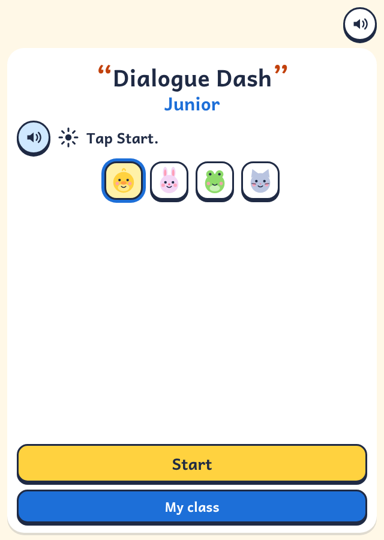
Tap, tap, tap. Let’s play!
This guide is for children aged 7 to 8. Read it together the first time.
A grown-up types the class code.
You tap your name.
Tap your name. Is it your name? Then you are in!
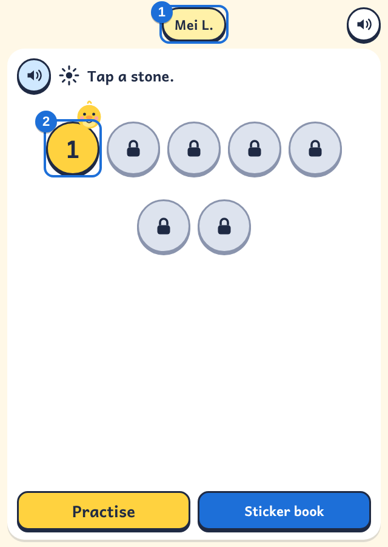
1 Your name. 2 The yellow stone is your next level.
Tap the yellow stone. Grey stones with a lock are not ready yet. Finish a level to open the next one.
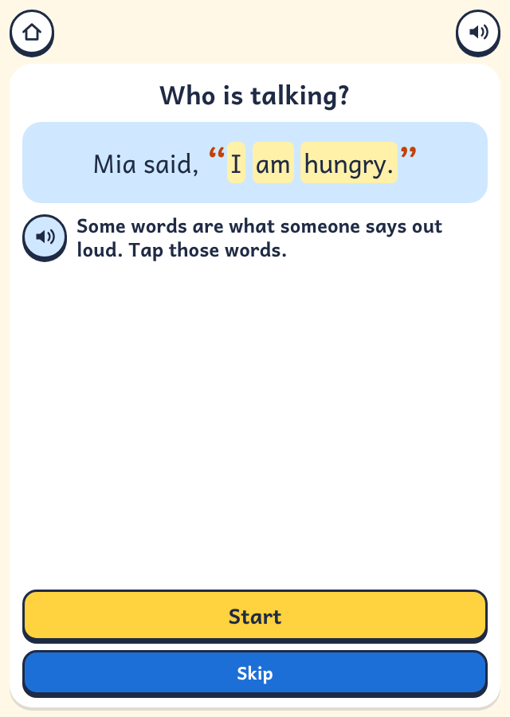
Read or listen. Tap Start.
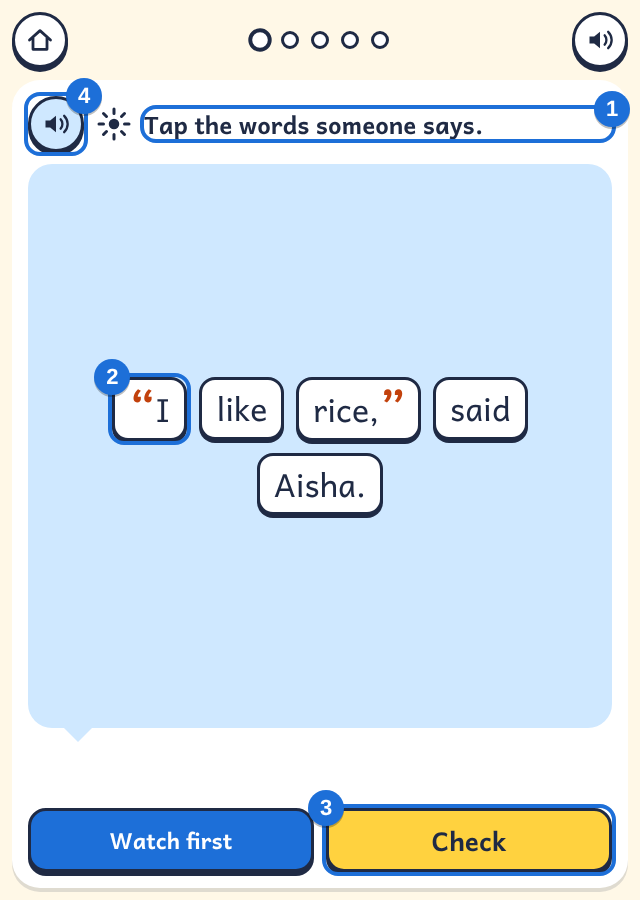
Do what the words at the top say.
The Watch first button shows you how. The little speaker 4 reads it out loud.
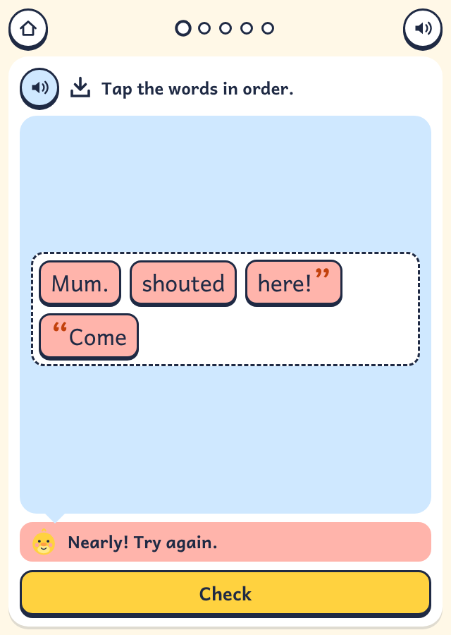
“Nearly! Try again.” Tap the words to take them back. Try once more.
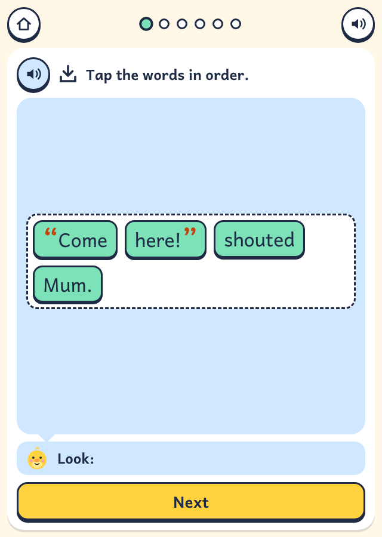
Still stuck? The game shows you. Tap Next.
Everyone makes mistakes. The game gives you that one again, so you can get it right.
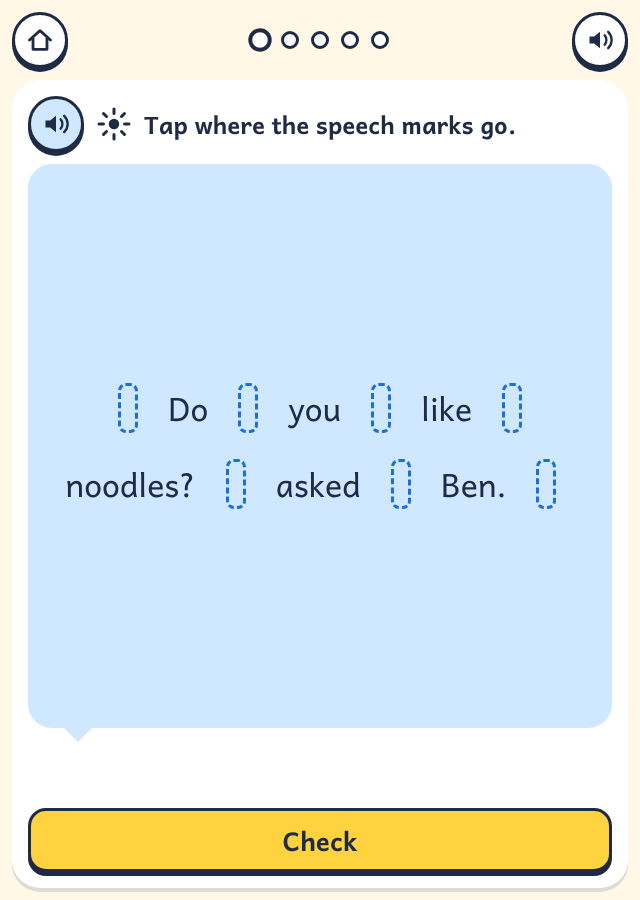
Speech marks. Tap the little gaps where speech marks go.
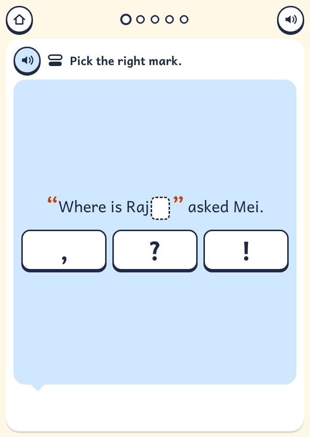
Little marks. Pick the right mark: , or ? or !
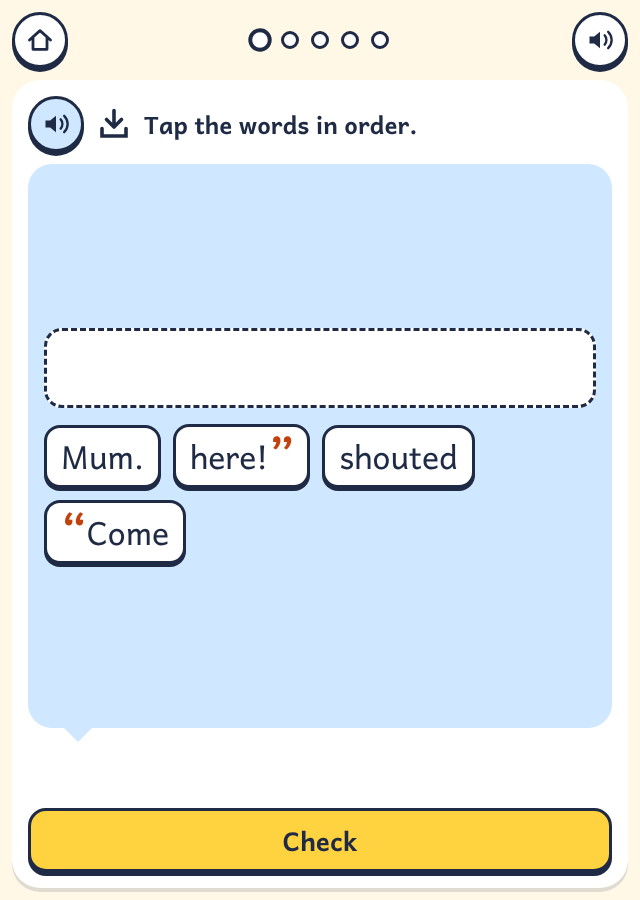
Build it. Tap the words in order.
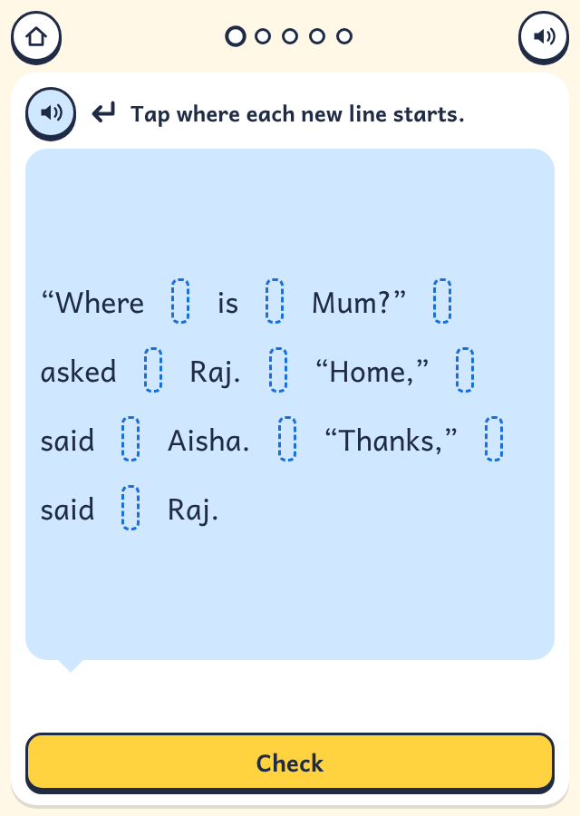
New line. Tap where each new speaker starts.
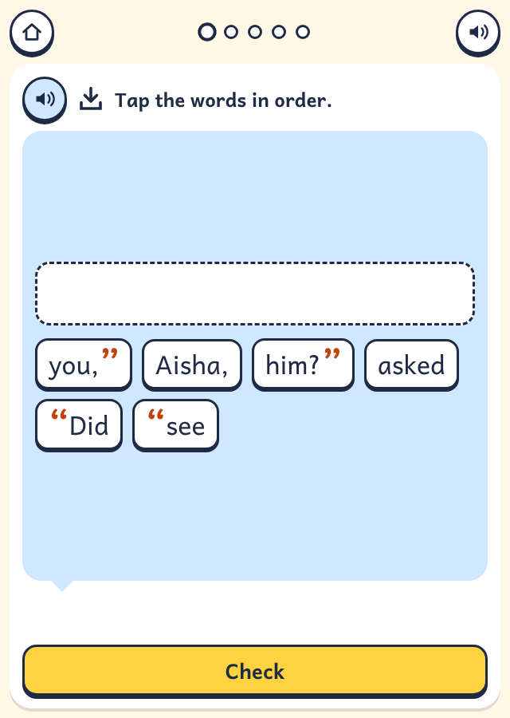
Split speech. The speaker pops in the middle.
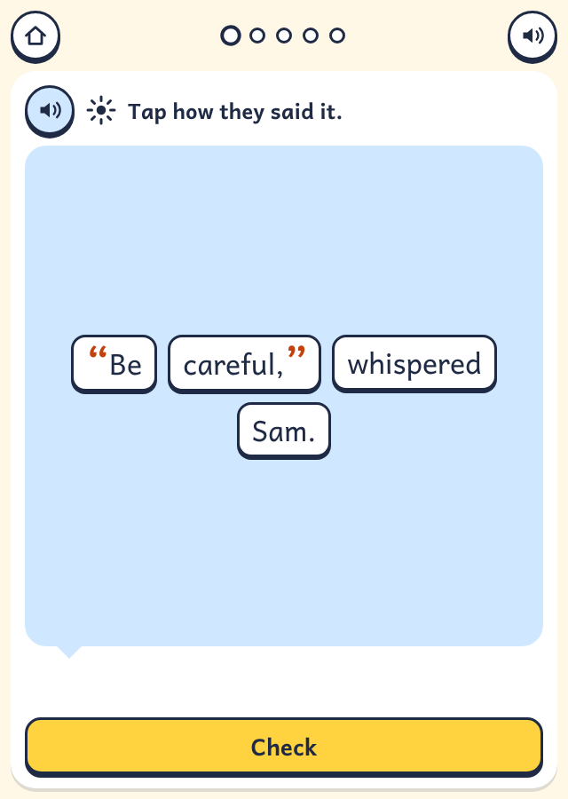
Speaking words. Tap how they said it.
“I am,” said Mia, “so hungry.”
Two bits of speech. Two sets of speech marks. The second bit starts with a small letter.
Some words say how we speak: said, asked, shouted, whispered, called, replied, cried.
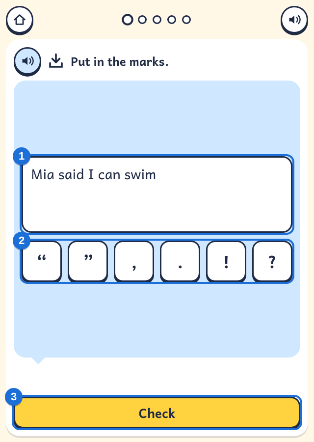
1 Your sentence. 2 The mark buttons. 3 Check.

A hint tells you one thing to fix.
This button appears after Level 4.
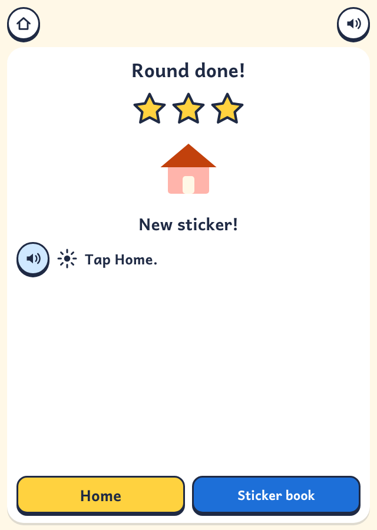
Round done! Stars and a sticker.
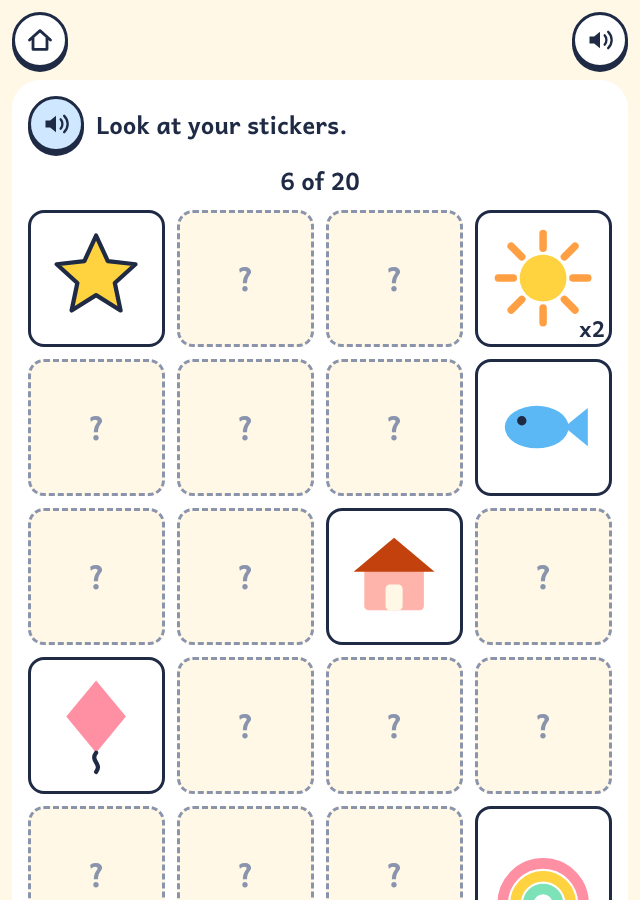
Your sticker book has 20 stickers.
Mia said, “I am hungry.”
“I am hungry,” said Mia.
Tap. Check. Try again. You can do it!